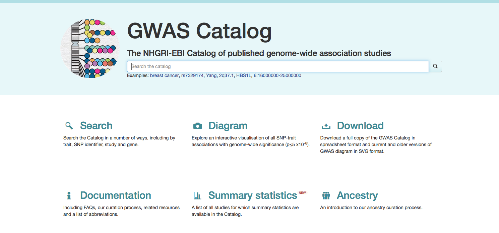
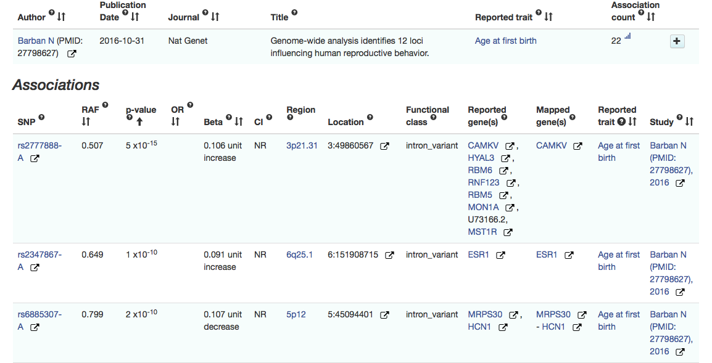
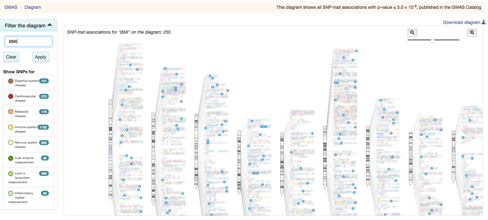
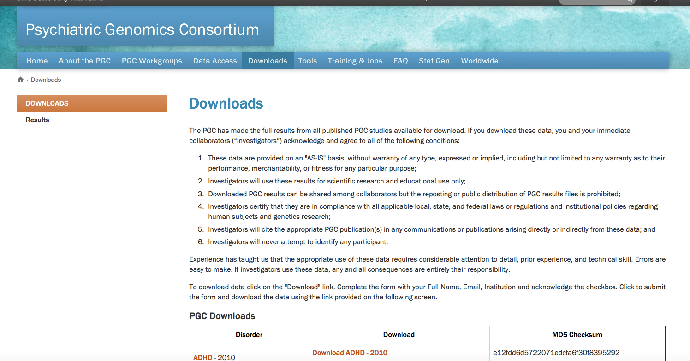
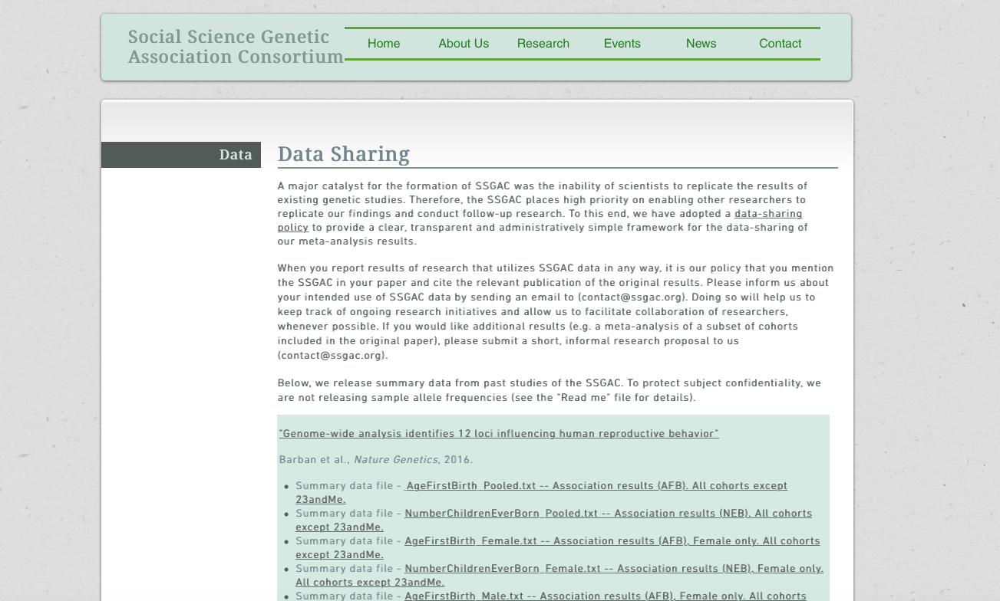
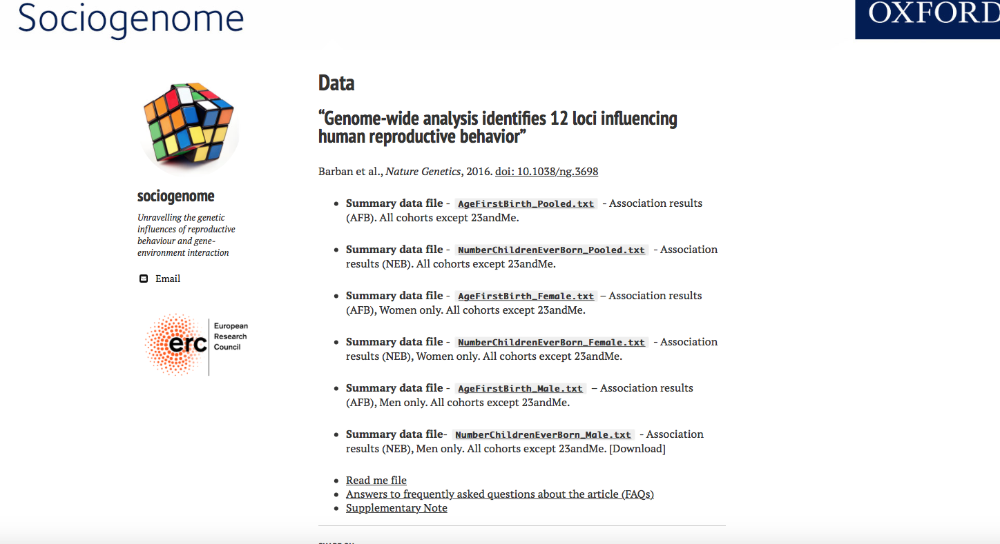
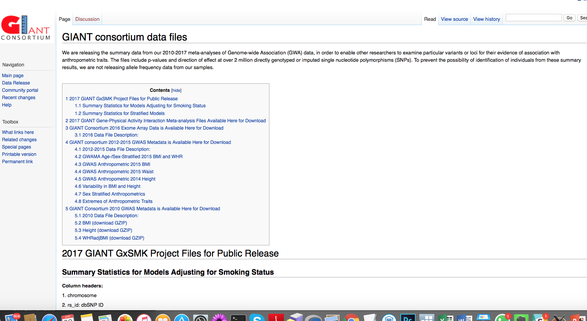

class: center, middle # Computer Session 7: Working with Association Results ##[Oxford NCRM Summer School](http://www.oxfordsociogenetics.com): ###An introduction to combining social science and molecular genetic research nicola.barban@nuffield.ox.ac.uk  --- # Outline ## In this computer lab we will learn how to ... 1. Where to find association results 2. How to download complete genome-wide association results 3. What to do with them. 4. How to do Manhattan plots 5. Use locuszoom 6. How to calculate genetic correlation from association results 7. Use LD Hub 8. Look up your 23andme results 9. Find genotypic data --- # Before we start * Download the data folder here: [data3](data3.zip) * Set up working directory ``` pwd mkdir session7 cd session7 ``` * Copy the data folder in your *session3* directory * Check the content of data folder ``` ls data/ ``` * Copy plink in your working directory *the plink version in the data folder is plink for mac. Please substitute it with the one for your Os* ``` cp data/plink ./ ./plink ``` --- # Optional (Need to install python 2.7) * Download [Anaconda](https://www.continuum.io/downloads). You will need Python 2.7 version * Install the latest version of `ldscore` ``` git clone https://github.com/bulik/ldsc.git ``` ``` * Check thad ldscore is correctly installed ``` ldsc/ldsc.py -h ldsc/munge_sumstats.py -h ``` --- # GWAS Catalog * The [**GWAS Catalog**](https://www.ebi.ac.uk/gwas/home) is provided jointly by the National Human Genome Research Institute (NHGRI) and the European Bioinformatics Institute (EMBL-EBI). * The Catalog is a quality controlled, collection of all published genome-wide association studies assaying at least 100,000 SNPs and all SNP-trait associations with p-values < 1.0 x 10-5. * The Catalog also publishes the iconic GWAS diagram of all SNP-trait associations, with p-values ≤ 5.0 x 10-8, mapped onto the human genome.  --- # Search in the catalog for a specific trait (or a specific SNP) *Go to the website and search for your favourite phenotype* ### These are the main results of our recent GWAS on Age at First Birth  --- # Where are located the SNPs for BMI? ## Let's have a look at the [map](https://www.ebi.ac.uk/gwas/diagram)!  --- # We can download genome-wide association results from different consortia * Major scientific journals require to publish complete list of results. ### [Psychiatric Genetic Consortium](https://www.med.unc.edu/pgc/results-and-downloads)  --- # Social Science Genetic Association Consortium * Educational Attainment * Subjective Wellbeing ### [SSGAC](https://www.thessgac.org/data)  --- # Sociogenome * Age at First Birth * Number of Children ### [Sociogenome](http://www.sociogenome.com//data/)  --- # Anthropometric Traits * Height * BMI * Waist/Hip Ratio ### [GIANT](http://portals.broadinstitute.org/collaboration/giant/index.php/GIANT_consortium_data_files)  --- # What to do with GW association results? ** 1. Plot Manhattan plot ** "A Manhattan plot is a type of scatter plot. **In GWAS Manhattan plots, genomic coordinates are displayed along the X-axis, with the negative logarithm of the association P-value for each single nucleotide polymorphism (SNP) displayed on the Y-axis**, Because the strongest associations have the smallest P-values their negative logarithms will be the greatest." (Wikipedia) <img src=images/mhEA.jpg width="650"> --- # How to do your manhattan plot I created a *small* file from the Educational attainment GWAS (Okbay et al. 2016) that contains only SNPs with p-value<0.05 ```R R install.packages("qqman") library(qqman) EAresults<-read.table("data/EduYears_reference_small.txt", header=T) #png(file="manhattanplot.png", width=700) manhattan(EAresults) #dev.off() q() ``` --- # Your first manhattan plot <img src=images/manhattanplot.png width="750"> --- # Locuszoom [Locuzoom](http://locuszoom.org) is an online tool to create close-up manhattan plot zooming in a gene or a particular locus. <img src=images/Locuszoom.png width="750"> --- # Example from published data 1. LocusZoom - Plot with Published Data 2. Yang 2012, BMI. Focus on FTO gene. <img src=images/CEU.FTO.200kb.pdf width="750"> --- # LD score bivariate regression * LD score bivariate regression is a tool to derive genetic correlation between traits using published association results. * The published results can come from overlapping studies * Genetic correlation tells you how much two traits share a common genetic variance. * Similar to bivariate GCTA, but does not require genotypic data ### Important papers * [Bulik-Sullivan et al. 2015a](http://www.nature.com/ng/journal/v47/n11/full/ng.3406.html) * [Bulik-Sullivan et al. 2015b](https://www.nature.com/ng/journal/v47/n3/full/ng.3211.html) ### Software * [Software tool for LD Score estimation and estimation of variance components from summary statistics](https://github.com/bulik/ldsc/) --- # LD score bivariate regression <img src=images/ldscorebivariate.png width="750"> --- # Genetic overlap with fertility traits <img src=images/Figure3.pdf width="750"> --- # How to run LD bivariate regression 1. Install LD score [see here](https://github.com/bulik/ldsc/) 2. Check that it works ```python ./ldsc.py -h ./munge_sumstats.py -h ``` 3. Obtain LD score statistics *(already downloaded and in your `data/` folder)* ``` wget https://data.broadinstitute.org/alkesgroup/LDSCORE/eur_w_ld_chr.tar.bz2 tar -jxvf eur_w_ld_chr.tar.bz2 ``` 4. Prepare data: ```python ./ldsc/munge_sumstats.py \ --sumstats data/EduYears_reference.txt \ --N 405072 \ --out education \ --merge-alleles data/w_hm3.snplist ``` **Don't need to run! We already prepared the data for you** --- # How to run LD bivariate regression ### Use the data prepared for you in the `data/` folder: ``` ./ldsc/ldsc.py \ --rg data/BMI.sumstats.gz,data/AFB_POOLED.sumstats.gz \ --ref-ld-chr data/eur_w_ld_chr/ \ --w-ld-chr data/eur_w_ld_chr/ \ --out bmi_afb ``` --- # Results (1) `less bmi_afb.log` ``` Heritability of phenotype 1 --------------------------- Total Observed scale h2: 0.1379 (0.0077) Lambda GC: 1.0772 Mean Chi^2: 1.2646 Intercept: 0.6486 (0.0101) Ratio < 0 (usually indicates GC correction). Heritability of phenotype 2/2 ----------------------------- Total Observed scale h2: 0.0594 (0.0033) Lambda GC: 1.2103 Mean Chi^2: 1.2488 Intercept: 0.9599 (0.0082) Ratio < 0 (usually indicates GC correction). ``` --- # Results (2) `less bmi_afb.log` ``` Genetic Covariance ------------------ Total Observed scale gencov: -0.0268 (0.0021) Mean z1*z2: -0.1474 Intercept: -0.0227 (0.0049) Genetic Correlation ------------------- Genetic Correlation: -0.296 (0.0218) Z-score: -13.5764 P: 5.5300e-42 ``` --- # LD HUB ### [LD hub](http://ldsc.broadinstitute.org/) <img src=images/LDhub.png width="650"> --- # Obtaining genotypic data * The database of Genotypes and Phenotypes (dbGaP) was developed to archive and distribute the data and results from studies that have investigated the interaction of genotype and phenotype in Humans. ### [dbGap](https://www.ncbi.nlm.nih.gov/gap) <img src=images/dbgap.png width="650"> --- # Obtaining genotypic data (UK) * The METADAC (Managing Ethico-social, Technical and Administrative issues in Data ACcess) is a multi-agency multi-study data access structure which will service several of the UK’s major cohort studies and to provide a scalable mechanism to incorporate additional cohorts in the future. ### [Metadac](http://www.metadac.ac.uk) <img src=images/metadac.png width="700"> --- # Getting the results from OpenSNP * openSNP allows customers of direct-to-customer genetic tests to publish their test results, find others with similar genetic variations, learn more about their results by getting the latest primary literature on their variations, and help scientists find new associations. [OpenSNP](https://opensnp.org/) <img src=images/opensnp.png width="700"> --- # Using Plink to read 23andme format * We can use genotype of an *anonymous* individuals from OpenSNP and read the data using plink. ``` less data/3260.23andme.2121 # This data file generated by 23andMe at: Fri Feb 6 14:50:19 2015 # # Below is a text version of your data. Fields are TAB-separated # Each line corresponds to a single SNP. For each SNP, we provide its identifier # (an rsid or an internal id), its location on the reference human genome, and the # genotype call oriented with respect to the plus strand on the human reference sequence. # We are using reference human assembly build 37 (also known as Annotation Release 104). # Note that it is possible that data downloaded at different times may be different due to ongoing # improvements in our ability to call genotypes. More information about these changes can be found at: # https://www.23andme.com/you/download/revisions/ # # More information on reference human assembly build 37 (aka Annotation Release 104): # http://www.ncbi.nlm.nih.gov/mapview/map_search.cgi?taxid=9606 # # rsid chromosome position genotype rs12564807 1 734462 AA rs3131972 1 752721 GG rs148828841 1 760998 CC rs12124819 1 776546 AA rs115093905 1 787173 GG rs11240777 1 798959 GG rs7538305 1 824398 AC rs4970383 1 838555 CC ``` --- # Importing 23andme data into plink ``` ./plink --23file data/3260.23andme.2121 --out plink_genome cat plink_genome.fam FAM001 ID001 0 0 1 -9 head plink_genome.bim 1 rs12564807 0 734462 0 A 1 rs3131972 0 752721 0 G 1 rs148828841 0 760998 0 C 1 rs12124819 0 776546 0 A 1 rs115093905 0 787173 0 G 1 rs11240777 0 798959 0 G 1 rs7538305 0 824398 C A 1 rs4970383 0 838555 0 C 1 rs4475691 0 846808 0 C 1 rs7537756 0 854250 0 A ``` --- # Create a genetic study with seeq.io [seeq.io](https://app.seeq.io) * **Users** can order online a genetic test, have information on their ancestry and microbiome and download their data. * As a **researcher**, you can use Seeq as a platform for your genomic studies by giving each user a special link. This link directs the user to the Seeq app, where we confirm that they are willing to link their Seeq account with your study and provide their genomic data. For individuals who are not already Seeq users, you can also optionally choose to fully or partially subsidize their sequencing. <img src=images/seeqio.png width="650"> --- ## Thanks nicola.barban@nuffield.ox.ac.uk  ---